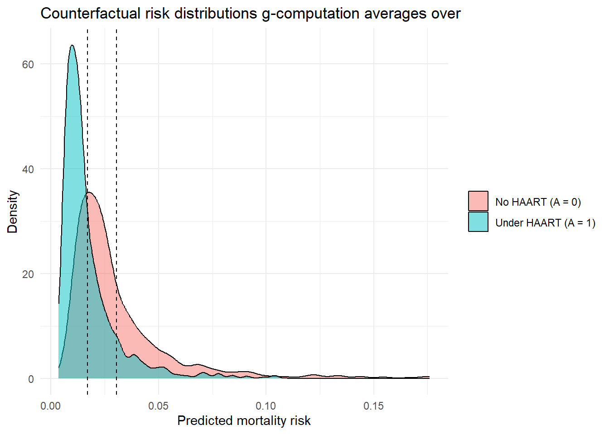

Write the g-formula for a point treatment and say what the standardization step does
Fit an outcome model, predict under each treatment value, and average to a marginal risk difference
Explain why a regression coefficient is not the marginal effect the g-formula returns
Recognize the two ways g-computation fails: a misspecified outcome model and poor positivity
Say why g-computation on its own gives no standard error
G-computation as a foundation for causal estimation
Outcome modeling and standardization, usually called g-computation, is one of the oldest and most intuitive approaches to causal inference (Robins 1986; Petersen and Laan 2014).
G-computation estimates causal effects by predicting what would happen to everyone under each treatment, then comparing those predictions (Hernán and Robins 2025). Nothing hinges on reading off a single regression coefficient. It implements the identification formula from Chapter 5 directly, an idea that traces back to the g-formula (Robins 1986) (\(E[Y(a)] = E_W[E[Y \mid A=a, W]]\), where the potential outcome \(Y(a)\) is written \(Y(1)\) and \(Y(0)\) for the two treatment levels), which makes it the most concrete entry point for learning causal estimation and shows how a causal estimand maps to a statistical one.
The method reconstructs what would have happened if everyone received treatment (\(A=1\)) and, separately, if everyone received control (\(A=0\)). The recipe has three steps: fit an outcome model \(E[Y \mid A, W]\), predict outcomes for each individual under both treatments, then average those predictions (standardization).
Identification assumptions
The equality \(E[Y(a)] = E_W[E[Y \mid A=a, W]]\) holds only under three conditions, developed in Chapter 5:
Consistency: the observed outcome under the treatment actually received equals the corresponding potential outcome.
Exchangeability (no unmeasured confounding): given \(W\), treatment is independent of the potential outcomes.
Positivity: every covariate stratum has a positive probability of receiving each treatment level, so the model is never asked to extrapolate into regions with no support.
If any of these fail, the standardized estimate no longer carries a causal interpretation, no matter how well the outcome model fits.
8.1 Implementation Example: HIV Antiretroviral Therapy Cohort
We use the shared HIV antiretroviral therapy cohort introduced in the case study (Wal and Geskus 2011). It follows people living with HIV from seroconversion and records highly active antiretroviral therapy (HAART) initiation and mortality. Here we collapse the longitudinal data to a point-treatment snapshot: A = ever_haart (1 = initiated HAART at any point, 0 = never initiated), Y = died (1 = died, 0 = alive at end of follow-up), with confounders age, sex, and baseline CD4 count (square-root transformed).
Treatment is strongly confounded by baseline CD4 count and age, which makes this a good setting for demonstrating g-computation.
8.2 Step-by-Step G-Computation
8.2.0.1 Step 1: Fit an Outcome Model
We fit a logistic regression model predicting the outcome from treatment and confounders:
Pitfall. The coefficient on ever_haart from this logistic regression is a conditional log-odds ratio. It tells you the association between HAART initiation and mortality holding confounders fixed, which is not a causal effect on its own. The next two steps, prediction and averaging, are what turn this model into a causal estimate.
8.2.0.2 Step 2: Predict Counterfactual Outcomes (The “What If” Step)
We ask two “what if” questions for every single person in the dataset, regardless of what treatment they actually received: what if this person had been treated (\(A=1\))? What if untreated (\(A=0\))?
Here p1[i] and p0[i] are the predicted outcomes for person i under treatment and control, respectively. Notice that we are not comparing treated against untreated groups. We are comparing two hypothetical worlds for the same people. That counterfactual move is what separates causal inference from plain regression.
8.2.0.3 Step 3: Standardize (Averaging Over the Population)
Averaging the counterfactual predictions over the entire population turns model-based predictions into a causal estimate: a standardized (marginal) risk difference, the same quantity a well-randomized trial would yield.
Show code
library(ggplot2)tibble::tibble(risk =c(p1, p0),arm =rep(c("Under HAART (A = 1)", "No HAART (A = 0)"), each =length(p1))) |>ggplot(aes(risk, fill = arm)) +geom_density(alpha =0.5) +geom_vline(xintercept =c(risk1, risk0), linetype ="dashed") +labs(x ="Predicted mortality risk", y ="Density", fill =NULL,title ="Counterfactual risk distributions g-computation averages over") +theme_minimal()

Figure 8.1: Predicted mortality risk for every individual under universal HAART initiation (\(A=1\)) versus no initiation (\(A=0\)). G-computation averages each distribution down to a single standardized risk (dashed lines); the gap between those averages is the average treatment effect (ATE).
How to interpret these results: In ?tbl-gcomp-riskdiff, ate is the standardized (marginal) risk difference, and it is the causal number, not either regression coefficient. Figure 8.1 plots the full counterfactual risk distributions behind those numbers, with the dashed lines marking risk1 and risk0 and the gap between them showing the ATE. Read the estimate as follows. If the entire population had initiated HAART rather than not, the estimated mortality risk would change by ate (about -1.3 percentage points), with the measured confounders’ distribution held fixed. risk1 and risk0 are the standardized risks under universal treatment and under no treatment, and the contrast between them is what a well-randomized trial would have estimated.
8.2.0.4 Beyond the Risk Difference: Relative Risk and Prevented Fraction
One strength of g-computation is that once you have the counterfactual predictions p1 and p0, you can compute any contrast, not just the risk difference. A single regression coefficient does not give you that.
?tbl-gcomp-contrasts collects three contrasts computed from the same p1 and p0. The relative risk is the ratio of the two standardized risks, risk1 / risk0. A value above 1 means the outcome is more common under treatment; a value below 1, as here (about 0.56), means the mortality risk under universal HAART is that fraction of the risk under no HAART. The prevented fraction compares the risk in a counterfactual world where no one initiated HAART with the observed mortality risk: the share of those no-treatment deaths that the current pattern of HAART use prevents. None of these is available from a single logistic regression coefficient; you would have to exponentiate and back-transform under strong scale assumptions, whereas g-computation reads them straight off the predicted counterfactual risks.
Prevented fraction or attributable fraction: match the formula to the direction of the effect
The prevented fraction is \((P(Y(0)=1) - P(Y=1)) / P(Y(0)=1)\), the share of the deaths that would occur under no treatment that the current treatment distribution prevents. It is the protective-exposure counterpart of the population attributable fraction, \((P(Y=1) - P(Y(0)=1)) / P(Y=1)\), which is the share of observed cases that removing a harmful exposure would eliminate. Use the attributable fraction for a harmful exposure and the prevented fraction for a protective one. Applying the attributable-fraction formula to a protective exposure such as HAART produces a negative number that is easy to misread. Under the identification assumptions above either contrast is causal; the traditional epidemiologic formulas built from observed prevalence are not.
8.3 Why G-Computation Works
It directly implements the identification formula:
\[
E_W[ E[Y | A=a, W] ].
\]
In plain terms, this averages the predicted outcomes under treatment (or control) across the full study population, weighting each prediction by the population’s covariate distribution. The goal is unchanged: estimate \(E[Y(1)] - E[Y(0)]\), the population-level risk difference.
Key Distinction: Marginal Risk Difference vs. Conditional Log-Odds Ratio
This is one of the most commonly confused points in epidemiology:
Conditional log-odds ratio (what logistic regression gives you): “Among people with the same age, sex, and baseline CD4, how do the odds of death differ between those who initiated HAART and those who did not?” This is a measure of association within strata. It does not tell you what would happen if you intervened on the whole population. It is also non-collapsible, meaning it changes depending on which covariates you condition on, even without confounding (Greenland, Robins, and Pearl 1999).
Marginal risk difference (what g-computation gives you): “If we could treat everyone versus no one, how much would the overall population risk change?” This is a causal contrast on the risk scale, the kind of number a clinician or policy maker can act on.
G-computation bridges the gap. It uses the conditional model internally but standardizes over the population to produce the marginal (causal) effect.
8.4 Diagnostics: When Can G-Computation Fail?
Model Misspecification
G-computation rests entirely on the outcome model \(E[Y \mid A, W]\). If that model is wrong (e.g., omits interactions, assumes linearity when the truth is non-linear), bias propagates directly into the causal estimate. For example, suppose the true risk of virologic failure depends on a nonlinear interaction between baseline CD4 count and age, but the fitted model includes only main effects. The model will generate systematically wrong counterfactual predictions for patients with unusual combinations of CD4 and age, and the resulting ATE estimate will be biased. Unlike IPTW, where positivity failures produce visible extreme weights, g-computation’s extrapolation errors are silent: the model returns a number with no warning that it is wrong. Always check residuals and consider flexible alternatives (see Chapter 10).
8.4.1 Watch it fail: a misspecified model biases the estimate
The warning above is easy to state and easy to ignore, so here it is as a number. We simulate a world in which treatment is concentrated among older patients but its benefit is concentrated among younger ones (Sofrygin, Laan, and Neugebauer 2017), then estimate the effect two ways: with a main-terms logistic regression that has no way to represent that age-specific effect, and with a model that includes it. The risk difference is known by construction, so we can measure exactly how far the misspecified model lands from the truth.
Show code
set.seed(2024)n <-20000age <-runif(n, 30, 80)A <-rbinom(n, 1, plogis(-12+0.2* age)) # treatment mostly among older patients# True risk: treatment helps only patients aged 60 or youngertrue_risk <-function(a, w) plogis(-2+0.02* (w -55) +2* a * (w <=60))Y <-rbinom(n, 1, true_risk(A, age))d <-data.frame(Y, A, age)# Truth: population risk difference under the known modeltrue_ate <-mean(true_risk(1, age) -true_risk(0, age))# Misspecified g-computation: main terms only (one treatment effect for all ages)m_wrong <-glm(Y ~ A + age, family = binomial, data = d)ate_wrong <-mean(predict(m_wrong, transform(d, A =1), type ="response") -predict(m_wrong, transform(d, A =0), type ="response"))# Correctly specified g-computation: include the age-specific treatment effectm_flex <-glm(Y ~ A *I(age <=60) + age, family = binomial, data = d)ate_flex <-mean(predict(m_flex, transform(d, A =1), type ="response") -predict(m_flex, transform(d, A =0), type ="response"))round(c(truth = true_ate, main_terms = ate_wrong, flexible = ate_flex), 3)
truth main_terms flexible
0.212 0.149 0.197
The main-terms estimate falls short of the true risk difference by about 30%. Almost all treated patients are older, and in that group treatment does little, so a model with a single treatment coefficient learns a small effect and then extrapolates it to the younger patients who would have benefited most. The correctly specified model recovers the truth to within sampling error. The bias here is moderate rather than dramatic, which is typical: a misspecified outcome model in g-computation is most dangerous when the treated and untreated differ strongly on the covariates where the model is wrong, so that the counterfactual predictions rest on extrapolation. The catch in real data is that no one tells you which terms to add. That is the problem Super Learner (Chapter 11) solves: instead of guessing the functional form, it lets a library of algorithms and cross-validation choose it (Laan, Polley, and Hubbard 2007). That is why the next chapters build g-computation and targeted maximum likelihood estimation (TMLE) on top of machine learning rather than a single hand-specified regression.
Poor Positivity
If some strata almost never receive a treatment, g-computation extrapolates into regions with little observed data. R will return a number, but it may be meaningless. Check propensity scores for values near 0 or 1:
G-computation handles near-positivity violations differently from IPTW. Where IPTW produces extreme weights for observations with propensity scores near 0 or 1, g-computation extrapolates from the fitted outcome model. How reliable that is depends on how well the model captures the true outcome surface in sparse regions of the covariate space. The extrapolation is implicit and may produce no visible warning. Chapter 13 covers positivity and overlap on their own, with diagnostics and remedies.
Pitfall. No modeling strategy fixes missing confounders. If an important common cause of treatment and outcome is absent from your dataset, g-computation (like every other method in this handbook) will produce a biased estimate. What g-computation does offer is explicit assumptions: you can see exactly which variables \(W\) enter the model, which helps transparent reporting and sensitivity analysis.
Practical note. The biggest limitation of g-computation with logistic regression is that you must get the functional form right. One alternative is to replace the parametric model with a data-adaptive learner (random forests, gradient boosting, GAMs, or a SuperLearner ensemble) (Laan, Polley, and Hubbard 2007), which loosens the parametric assumptions. Later chapters integrate SuperLearner with TMLE(Laan and Rubin 2006).
Super Learner in one sentence (for now)
Super Learner is an ensemble that uses cross-validation to combine many candidate models into a single prediction, introduced in full in Chapter 11. Until then you can read the SuperLearner(...) call below as a flexible stand-in for the single GLM: same role (predict the outcome given treatment and covariates), but it lets the data choose the functional form instead of you guessing it.
Why G-Computation Is Less Common in Practice: No Built-In Inference
The simple plug-in g-computation implementation shown here produces a point estimate but does not automatically provide standard errors or confidence intervals. This is a practical limitation of the plug-in approach, not a fundamental property of g-computation: influence-function-based variance estimators exist under regularity conditions and are used by TMLE (covered in Chapter 10).
In practice, the most common approach for inference with plug-in g-computation is the nonparametric bootstrap: repeat the entire procedure (fit model, predict counterfactuals, average) on many resampled datasets and take percentiles of the resulting distribution.
This works but is computationally expensive and does not benefit from efficiency theory. The methods in the next two chapters (IPTW and especially TMLE) give analytic standard errors and confidence intervals based on influence function theory, which makes them more practical for routine use (Laan and Rubin 2006). TMLE in particular pairs the outcome-modeling strengths of g-computation with formal inference, one reason it is the recommended approach in later chapters.
Summary
G-computation = fit a model, predict under both treatments for everyone, then average. That three-step standardization is what converts a conditional model into a marginal causal estimate. Its main vulnerability is outcome-model misspecification. Flexible learners and doubly robust methods (IPTW, TMLE) address that in later chapters.
8.4.2 Check your understanding
Q1. You run g-computation using a logistic regression model. A colleague asks: “Isn’t this just a regression coefficient?” How do you explain the difference?
No. A logistic regression coefficient is a conditional log-odds ratio that describes how the log-odds of the outcome change with treatment, holding covariates fixed at particular values. G-computation uses that same model but adds two steps: it predicts outcomes for every individual under both \(A=1\) and \(A=0\), then averages those predictions over the entire population. The result is a marginal risk difference (the ATE on the risk scale), which answers a different question: “How much would population-level risk change if we could treat everyone versus no one?” The regression coefficient is conditional and on the log-odds scale, while the g-computation estimate is marginal and on the risk scale. They are different quantities even when the underlying model is the same.
Q2. What happens to the g-computation estimate if the outcome model is misspecified?
G-computation is only as good as its outcome model. If \(E[Y \mid A, W]\) is misspecified (for example, it assumes a linear relationship when the truth involves interactions or non-linearities), the counterfactual predictions will be systematically wrong, and the ATE estimate will be biased. Unlike doubly robust methods (AIPW, TMLE), g-computation has no second chance: there is no treatment model to compensate for outcome-model errors. That is why diagnostics (residual checks, comparison across model specifications) and flexible modeling strategies (SuperLearner) matter when you use g-computation.
Q3. Why does g-computation produce a marginal (population-level) effect even though it uses a conditional model internally?
The answer is the standardization (averaging) step. The outcome model \(E[Y \mid A, W]\) is conditional: it gives a predicted outcome for a specific individual with covariates \(W=w\) under treatment \(A=a\). But g-computation does not report these individual-level predictions. Instead, it predicts for every person under \(A=1\) and under \(A=0\), then takes the population average of the difference. This averaging over the empirical covariate distribution \(P(W)\) is exactly the operation \(E_W[E[Y \mid A=a, W]]\) from the identification formula, and it produces a marginal effect. The conditional model is an intermediate tool. The final quantity is a population-level causal contrast.
8.4.3 What comes next
G-computation depends entirely on the outcome model being correctly specified. The next chapter turns the problem around and models the treatment mechanism instead: IPTW reweights observations to create a pseudo-population where treatment appears randomized.
Greenland, Sander, James M. Robins, and Judea Pearl. 1999. “Confounding and Collapsibility in Causal Inference.”Statistical Science 14 (1): 29–46.
Laan, Mark J van der, Eric C Polley, and Alan E Hubbard. 2007. “Super Learner.”Statistical Applications in Genetics and Molecular Biology 6 (1).
Laan, Mark J van der, and Daniel Rubin. 2006. “Targeted Maximum Likelihood Learning.”The International Journal of Biostatistics 2 (1).
Petersen, Maya L, and Mark J van der Laan. 2014. “Causal Models and Learning from Data: Integrating Causal Modeling and Statistical Estimation.”Epidemiology 25 (3): 418–26.
Robins, James. 1986. “A New Approach to Causal Inference in Mortality Studies with a Sustained Exposure Period—Application to Control of the Healthy Worker Survivor Effect.”Mathematical Modelling 7 (9–12): 1393–1512.
Sofrygin, Oleg, Mark J. van der Laan, and Romain Neugebauer. 2017. “simcausalR Package: Conducting Transparent and Reproducible Simulation Studies of Causal Effect Estimation with Complex Longitudinal Data.”Journal of Statistical Software 81 (2): 1–47. https://doi.org/10.18637/jss.v081.i02.
Wal, Willem M. van der, and Ronald B. Geskus. 2011. “ipw: An R Package for Inverse Probability Weighting.”Journal of Statistical Software 43 (13): 1–23. https://doi.org/10.18637/jss.v043.i13.
Source Code
---format: html---# Outcome Modeling and Standardization (G-Computation) {#sec-gcomputation}*Estimated reading time: 25 minutes*::: {.callout-note}## Learning objectives- Write the g-formula for a point treatment and say what the standardization step does- Fit an outcome model, predict under each treatment value, and average to a marginal risk difference- Explain why a regression coefficient is not the marginal effect the g-formula returns- Recognize the two ways g-computation fails: a misspecified outcome model and poor positivity- Say why g-computation on its own gives no standard error:::*G-computation as a foundation for causal estimation*Outcome modeling and standardization, usually called **g-computation**, is one of the oldest and most intuitive approaches to causal inference [@robins1986gformula; @petersen2014causal].---G-computation estimates causal effects by predicting what *would* happen to everyone under each treatment, then comparing those predictions [@hernan2025whatif]. Nothing hinges on reading off a single regression coefficient. It implements the identification formula from @sec-roadmap directly, an idea that traces back to the g-formula [@robins1986gformula] ($E[Y(a)] = E_W[E[Y \mid A=a, W]]$, where the potential outcome $Y(a)$ is written $Y(1)$ and $Y(0)$ for the two treatment levels), which makes it the most concrete entry point for learning causal estimation and shows how a causal estimand maps to a statistical one.The method reconstructs what would have happened if *everyone* received treatment ($A=1$) and, separately, if *everyone* received control ($A=0$). The recipe has three steps: fit an outcome model $E[Y \mid A, W]$, predict outcomes for each individual under both treatments, then average those predictions (standardization).:::{.callout-note}## Identification assumptionsThe equality $E[Y(a)] = E_W[E[Y \mid A=a, W]]$ holds only under three conditions, developed in @sec-roadmap:- **Consistency**: the observed outcome under the treatment actually received equals the corresponding potential outcome.- **Exchangeability** (no unmeasured confounding): given $W$, treatment is independent of the potential outcomes.- **Positivity**: every covariate stratum has a positive probability of receiving each treatment level, so the model is never asked to extrapolate into regions with no support.If any of these fail, the standardized estimate no longer carries a causal interpretation, no matter how well the outcome model fits.:::## Implementation Example: HIV Antiretroviral Therapy CohortWe use the shared HIV antiretroviral therapy cohort introduced in the case study [@vanderwal2011ipw]. It follows people living with HIV from seroconversion and records highly active antiretroviral therapy (HAART) initiation and mortality. Here we collapse the longitudinal data to a point-treatment snapshot: A = `ever_haart` (1 = initiated HAART at any point, 0 = never initiated), Y = `died` (1 = died, 0 = alive at end of follow-up), with confounders age, sex, and baseline CD4 count (square-root transformed).```{webr-r}library(tidyverse)source("_data/load-haart-cohort.R")dat <- as_tibble(haart_baseline)``````{r}#| include: falselibrary(tidyverse)source("_data/load-haart-cohort.R")dat <-as_tibble(haart_baseline)```Treatment is strongly confounded by baseline CD4 count and age, which makes this a good setting for demonstrating g-computation.---## Step-by-Step G-Computation#### Step 1: Fit an Outcome ModelWe fit a logistic regression model predicting the outcome from treatment and confounders:```{webr-r}mod <- glm(died ~ ever_haart + age + sex + cd4_sqrt_baseline, family = binomial, data = dat)broom::tidy(mod, conf.int = TRUE) |> knitr::kable(digits = 3, caption = "Outcome model coefficients")``````{r}#| include: falsemod <-glm(died ~ ever_haart + age + sex + cd4_sqrt_baseline,family = binomial, data = dat)broom::tidy(mod, conf.int =TRUE) |> knitr::kable(digits =3, caption ="Outcome model coefficients")```**Pitfall.** The coefficient on `ever_haart` from this logistic regression is a *conditional log-odds ratio*. It tells you the association between HAART initiation and mortality *holding confounders fixed*, which is not a causal effect on its own. The next two steps, prediction and averaging, are what turn this model into a causal estimate.#### Step 2: Predict Counterfactual Outcomes (The "What If" Step)We ask two "what if" questions for *every single person* in the dataset, regardless of what treatment they actually received: what if this person had been treated ($A=1$)? What if untreated ($A=0$)?```{webr-r}# create counterfactual datasetsdat1 <- dat %>% mutate(ever_haart = 1)dat0 <- dat %>% mutate(ever_haart = 0)# predict potential outcomesp1 <- predict(mod, newdata = dat1, type = "response")p0 <- predict(mod, newdata = dat0, type = "response")``````{r}#| include: false# create counterfactual datasetsdat1 <- dat %>%mutate(ever_haart =1)dat0 <- dat %>%mutate(ever_haart =0)# predict potential outcomesp1 <-predict(mod, newdata = dat1, type ="response")p0 <-predict(mod, newdata = dat0, type ="response")```Here `p1[i]` and `p0[i]` are the predicted outcomes for person *i* under treatment and control, respectively. Notice that we are *not* comparing treated against untreated groups. We are comparing two hypothetical worlds for the *same* people. That counterfactual move is what separates causal inference from plain regression.#### Step 3: Standardize (Averaging Over the Population)Averaging the counterfactual predictions over the *entire population* turns model-based predictions into a causal estimate: a standardized (marginal) risk difference, the same quantity a well-randomized trial would yield.```{webr-r}#| tbl-cap: "Standardized risks under universal HAART initiation and under no initiation, and their difference (the ATE on the risk scale)."risk1 <- mean(p1)risk0 <- mean(p0)ate <- risk1 - risk0knitr::kable(data.frame(risk1 = risk1, risk0 = risk0, ate = ate))``````{r}#| include: falserisk1 <-mean(p1)risk0 <-mean(p0)ate <- risk1 - risk0knitr::kable(data.frame(risk1 = risk1, risk0 = risk0, ate = ate))``````{r}#| label: fig-gcomp-counterfactual#| fig-cap: "Predicted mortality risk for every individual under universal HAART initiation ($A=1$) versus no initiation ($A=0$). G-computation averages each distribution down to a single standardized risk (dashed lines); the gap between those averages is the average treatment effect (ATE)."#| code-fold: truelibrary(ggplot2)tibble::tibble(risk =c(p1, p0),arm =rep(c("Under HAART (A = 1)", "No HAART (A = 0)"), each =length(p1))) |>ggplot(aes(risk, fill = arm)) +geom_density(alpha =0.5) +geom_vline(xintercept =c(risk1, risk0), linetype ="dashed") +labs(x ="Predicted mortality risk", y ="Density", fill =NULL,title ="Counterfactual risk distributions g-computation averages over") +theme_minimal()```**How to interpret these results:** In @tbl-gcomp-riskdiff, `ate` is the standardized (marginal) risk difference, and it is the causal number, not either regression coefficient. @fig-gcomp-counterfactual plots the full counterfactual risk distributions behind those numbers, with the dashed lines marking `risk1` and `risk0` and the gap between them showing the ATE. Read the estimate as follows. If the entire population had initiated HAART rather than not, the estimated mortality risk would change by `ate` (about `r round(ate * 100, 1)` percentage points), with the measured confounders' distribution held fixed. `risk1` and `risk0` are the standardized risks under universal treatment and under no treatment, and the contrast between them is what a well-randomized trial would have estimated.#### Beyond the Risk Difference: Relative Risk and Prevented FractionOne strength of g-computation is that once you have the counterfactual predictions `p1` and `p0`, you can compute *any* contrast, not just the risk difference. A single regression coefficient does not give you that.```{webr-r}#| tbl-cap: "Alternative causal contrasts computed from the same counterfactual predictions: risk difference, relative risk, and prevented fraction relative to a world in which no one initiated HAART."# Relative risk (risk ratio)rr <- risk1 / risk0# Causal prevented fraction, relative to a "no one treated" world:# (P(Y(0)=1) - P(Y=1)) / P(Y(0)=1), the share of the deaths that would occur# if no one initiated HAART that the current treatment distribution prevents.overall_risk <- mean(dat$died)prevented_frac <- (risk0 - overall_risk) / risk0knitr::kable(data.frame( Measure = c("Risk difference (ATE)", "Relative risk", "Prevented fraction (vs no one treated)"), Estimate = round(c(ate, rr, prevented_frac), 4)))``````{r}#| include: false# Relative risk (risk ratio)rr <- risk1 / risk0# Causal prevented fraction, relative to a "no one treated" world:# (P(Y(0)=1) - P(Y=1)) / P(Y(0)=1), the share of the deaths that would occur# if no one initiated HAART that the current treatment distribution prevents.overall_risk <-mean(dat$died)prevented_frac <- (risk0 - overall_risk) / risk0knitr::kable(data.frame(Measure =c("Risk difference (ATE)", "Relative risk", "Prevented fraction (vs no one treated)"),Estimate =round(c(ate, rr, prevented_frac), 4)))```@tbl-gcomp-contrasts collects three contrasts computed from the same `p1` and `p0`. The **relative risk** is the ratio of the two standardized risks, `risk1 / risk0`. A value above 1 means the outcome is more common under treatment; a value below 1, as here (about `r round(rr, 2)`), means the mortality risk under universal HAART is that fraction of the risk under no HAART. The **prevented fraction** compares the risk in a counterfactual world where *no one* initiated HAART with the observed mortality risk: the share of those no-treatment deaths that the current pattern of HAART use prevents. None of these is available from a single logistic regression coefficient; you would have to exponentiate and back-transform under strong scale assumptions, whereas g-computation reads them straight off the predicted counterfactual risks.:::{.callout-warning}## Prevented fraction or attributable fraction: match the formula to the direction of the effectThe prevented fraction is $(P(Y(0)=1) - P(Y=1)) / P(Y(0)=1)$, the share of the deaths that would occur under no treatment that the current treatment distribution prevents. It is the protective-exposure counterpart of the population attributable fraction, $(P(Y=1) - P(Y(0)=1)) / P(Y=1)$, which is the share of observed cases that removing a *harmful* exposure would eliminate. Use the attributable fraction for a harmful exposure and the prevented fraction for a protective one. Applying the attributable-fraction formula to a protective exposure such as HAART produces a negative number that is easy to misread. Under the identification assumptions above either contrast is causal; the traditional epidemiologic formulas built from observed prevalence are not.:::## Why G-Computation WorksIt directly implements the identification formula:$$E_W[ E[Y | A=a, W] ].$$In plain terms, this averages the predicted outcomes under treatment (or control) across the full study population, weighting each prediction by the population's covariate distribution. The goal is unchanged: estimate $E[Y(1)] - E[Y(0)]$, the population-level risk difference.:::{.callout-tip}## Key Distinction: Marginal Risk Difference vs. Conditional Log-Odds RatioThis is one of the most commonly confused points in epidemiology:- **Conditional log-odds ratio** (what logistic regression gives you): "Among people with the *same* age, sex, and baseline CD4, how do the odds of death differ between those who initiated HAART and those who did not?" This is a measure of *association within strata*. It does not tell you what would happen if you intervened on the whole population. It is also non-collapsible, meaning it changes depending on which covariates you condition on, even without confounding [@greenland1999collapsibility].- **Marginal risk difference** (what g-computation gives you): "If we could treat *everyone* versus *no one*, how much would the overall population risk change?" This is a *causal* contrast on the risk scale, the kind of number a clinician or policy maker can act on.G-computation bridges the gap. It uses the conditional model internally but standardizes over the population to produce the marginal (causal) effect.:::---## Diagnostics: When Can G-Computation Fail?:::{.callout-warning}## Model MisspecificationG-computation rests entirely on the outcome model $E[Y \mid A, W]$. If that model is wrong (e.g., omits interactions, assumes linearity when the truth is non-linear), bias propagates directly into the causal estimate. For example, suppose the true risk of virologic failure depends on a nonlinear interaction between baseline CD4 count and age, but the fitted model includes only main effects. The model will generate systematically wrong counterfactual predictions for patients with unusual combinations of CD4 and age, and the resulting ATE estimate will be biased. Unlike IPTW, where positivity failures produce visible extreme weights, g-computation's extrapolation errors are silent: the model returns a number with no warning that it is wrong. Always check residuals and consider flexible alternatives (see @sec-doubly-robust-tmle).:::### Watch it fail: a misspecified model biases the estimateThe warning above is easy to state and easy to ignore, so here it is as a number. We simulate a world in which treatment is concentrated among older patients but its benefit is concentrated among younger ones [@sofrygin2017simcausal], then estimate the effect two ways: with a main-terms logistic regression that has no way to represent that age-specific effect, and with a model that includes it. The risk difference is known by construction, so we can measure exactly how far the misspecified model lands from the truth.```{r}#| code-fold: showset.seed(2024)n <-20000age <-runif(n, 30, 80)A <-rbinom(n, 1, plogis(-12+0.2* age)) # treatment mostly among older patients# True risk: treatment helps only patients aged 60 or youngertrue_risk <-function(a, w) plogis(-2+0.02* (w -55) +2* a * (w <=60))Y <-rbinom(n, 1, true_risk(A, age))d <-data.frame(Y, A, age)# Truth: population risk difference under the known modeltrue_ate <-mean(true_risk(1, age) -true_risk(0, age))# Misspecified g-computation: main terms only (one treatment effect for all ages)m_wrong <-glm(Y ~ A + age, family = binomial, data = d)ate_wrong <-mean(predict(m_wrong, transform(d, A =1), type ="response") -predict(m_wrong, transform(d, A =0), type ="response"))# Correctly specified g-computation: include the age-specific treatment effectm_flex <-glm(Y ~ A *I(age <=60) + age, family = binomial, data = d)ate_flex <-mean(predict(m_flex, transform(d, A =1), type ="response") -predict(m_flex, transform(d, A =0), type ="response"))round(c(truth = true_ate, main_terms = ate_wrong, flexible = ate_flex), 3)```The main-terms estimate falls short of the true risk difference by about `r round(100 * (true_ate - ate_wrong) / true_ate)`%. Almost all treated patients are older, and in that group treatment does little, so a model with a single treatment coefficient learns a small effect and then extrapolates it to the younger patients who would have benefited most. The correctly specified model recovers the truth to within sampling error. The bias here is moderate rather than dramatic, which is typical: a misspecified outcome model in g-computation is most dangerous when the treated and untreated differ strongly on the covariates where the model is wrong, so that the counterfactual predictions rest on extrapolation. The catch in real data is that no one tells you which terms to add. That is the problem Super Learner (@sec-superlearner) solves: instead of guessing the functional form, it lets a library of algorithms and cross-validation choose it [@vanderLaan2007superlearner]. That is why the next chapters build g-computation and targeted maximum likelihood estimation (TMLE) on top of machine learning rather than a single hand-specified regression.---:::{.callout-warning}## Poor PositivityIf some strata almost never receive a treatment, g-computation *extrapolates* into regions with little observed data. R will return a number, but it may be meaningless. Check propensity scores for values near 0 or 1:```{webr-r}ps <- predict(glm(ever_haart ~ age + sex + cd4_sqrt_baseline, family = binomial, data = dat), type = "response")summary(ps)``````{r}#| include: falseps <-predict(glm(ever_haart ~ age + sex + cd4_sqrt_baseline,family = binomial, data = dat), type ="response")summary(ps)```G-computation handles near-positivity violations differently from IPTW. Where IPTW produces extreme weights for observations with propensity scores near 0 or 1, g-computation extrapolates from the fitted outcome model. How reliable that is depends on how well the model captures the true outcome surface in sparse regions of the covariate space. The extrapolation is implicit and may produce no visible warning. @sec-positivity-overlap covers positivity and overlap on their own, with diagnostics and remedies.:::---**Pitfall.** No modeling strategy fixes missing confounders. If an important common cause of treatment and outcome is absent from your dataset, g-computation (like every other method in this handbook) will produce a biased estimate. What g-computation does offer is explicit assumptions: you can see exactly which variables $W$ enter the model, which helps transparent reporting and sensitivity analysis.---**Practical note.** The biggest limitation of g-computation with logistic regression is that you must get the functional form right. One alternative is to replace the parametric model with a data-adaptive learner (random forests, gradient boosting, GAMs, or a SuperLearner ensemble) [@vanderLaan2007superlearner], which loosens the parametric assumptions. Later chapters integrate SuperLearner with **TMLE** [@vanderLaan2006tmle].::: {.callout-note}## Super Learner in one sentence (for now)Super Learner is an ensemble that uses cross-validation to combine many candidate models into a single prediction, introduced in full in @sec-superlearner. Until then you can read the `SuperLearner(...)` call below as a flexible stand-in for the single GLM: same role (predict the outcome given treatment and covariates), but it lets the data choose the functional form instead of you guessing it.:::```{webr-r}#| warning: false#| message: falselibrary(SuperLearner)set.seed(2026)# SuperLearner expects a plain data.frame of predictorsX_all <- as.data.frame(dat[, c("ever_haart", "age", "sex", "cd4_sqrt_baseline")])sl_mod <- SuperLearner( Y = dat$died, X = X_all, family = binomial(), SL.library = c("SL.glm", "SL.ranger", "SL.gam"))# predict for counterfactuals (predictor columns only)p1_sl <- predict(sl_mod, newdata = transform(X_all, ever_haart = 1))$predp0_sl <- predict(sl_mod, newdata = transform(X_all, ever_haart = 0))$pred# Super Learner g-computation ATE (compare to the GLM estimate above)c(ate_sl = mean(p1_sl - p0_sl))``````{r}#| include: falselibrary(SuperLearner)set.seed(2026)# SuperLearner expects a plain data.frame of predictorsX_all <-as.data.frame(dat[, c("ever_haart", "age", "sex", "cd4_sqrt_baseline")])sl_mod <-SuperLearner(Y = dat$died,X = X_all,family =binomial(),SL.library =c("SL.glm", "SL.ranger", "SL.gam"))# predict for counterfactuals (predictor columns only)p1_sl <-predict(sl_mod, newdata =transform(X_all, ever_haart =1))$predp0_sl <-predict(sl_mod, newdata =transform(X_all, ever_haart =0))$pred# Super Learner g-computation ATE (compare to the GLM estimate above)c(ate_sl =mean(p1_sl - p0_sl))```---:::{.callout-warning}## Why G-Computation Is Less Common in Practice: No Built-In InferenceThe simple plug-in g-computation implementation shown here produces a point estimate but does not automatically provide standard errors or confidence intervals. This is a practical limitation of the plug-in approach, not a fundamental property of g-computation: influence-function-based variance estimators exist under regularity conditions and are used by TMLE (covered in @sec-doubly-robust-tmle).In practice, the most common approach for inference with plug-in g-computation is the **nonparametric bootstrap**: repeat the entire procedure (fit model, predict counterfactuals, average) on many resampled datasets and take percentiles of the resulting distribution.```{webr-r}# Bootstrap confidence interval for g-computationset.seed(42)n_boot <- 500boot_ates <- numeric(n_boot)for (b in seq_len(n_boot)) { boot_dat <- dat[sample(nrow(dat), replace = TRUE), ] boot_mod <- glm(died ~ ever_haart + age + sex + cd4_sqrt_baseline, family = binomial, data = boot_dat) bp1 <- predict(boot_mod, newdata = mutate(boot_dat, ever_haart = 1), type = "response") bp0 <- predict(boot_mod, newdata = mutate(boot_dat, ever_haart = 0), type = "response") boot_ates[b] <- mean(bp1) - mean(bp0)}quantile(boot_ates, c(0.025, 0.975))``````{r}#| include: false# Bootstrap confidence interval for g-computationset.seed(42)n_boot <-500boot_ates <-numeric(n_boot)for (b inseq_len(n_boot)) { boot_dat <- dat[sample(nrow(dat), replace =TRUE), ] boot_mod <-glm(died ~ ever_haart + age + sex + cd4_sqrt_baseline,family = binomial, data = boot_dat) bp1 <-predict(boot_mod, newdata =mutate(boot_dat, ever_haart =1), type ="response") bp0 <-predict(boot_mod, newdata =mutate(boot_dat, ever_haart =0), type ="response") boot_ates[b] <-mean(bp1) -mean(bp0)}quantile(boot_ates, c(0.025, 0.975))```This works but is computationally expensive and does not benefit from efficiency theory. The methods in the next two chapters (**IPTW** and especially TMLE) give analytic standard errors and confidence intervals based on influence function theory, which makes them more practical for routine use [@vanderLaan2006tmle]. TMLE in particular pairs the outcome-modeling strengths of g-computation with formal inference, one reason it is the recommended approach in later chapters.::::::{.callout-tip}## SummaryG-computation = fit a model, predict under both treatments for everyone, then average. That three-step standardization is what converts a conditional model into a marginal causal estimate. Its main vulnerability is outcome-model misspecification. Flexible learners and doubly robust methods (IPTW, TMLE) address that in later chapters.:::---### Check your understanding<details><summary><strong>Q1. You run g-computation using a logistic regression model. A colleague asks: "Isn't this just a regression coefficient?" How do you explain the difference?</strong></summary>No. A logistic regression coefficient is a *conditional log-odds ratio* that describes how the log-odds of the outcome change with treatment, holding covariates fixed at particular values. G-computation uses that same model but adds two steps: it predicts outcomes for every individual under both $A=1$ and $A=0$, then *averages* those predictions over the entire population. The result is a marginal risk difference (the ATE on the risk scale), which answers a different question: "How much would population-level risk change if we could treat everyone versus no one?" The regression coefficient is conditional and on the log-odds scale, while the g-computation estimate is marginal and on the risk scale. They are different quantities even when the underlying model is the same.</details><details><summary><strong>Q2. What happens to the g-computation estimate if the outcome model is misspecified?</strong></summary>G-computation is only as good as its outcome model. If $E[Y \mid A, W]$ is misspecified (for example, it assumes a linear relationship when the truth involves interactions or non-linearities), the counterfactual predictions will be systematically wrong, and the ATE estimate will be biased. Unlike doubly robust methods (AIPW, TMLE), g-computation has no second chance: there is no treatment model to compensate for outcome-model errors. That is why diagnostics (residual checks, comparison across model specifications) and flexible modeling strategies (SuperLearner) matter when you use g-computation.</details><details><summary><strong>Q3. Why does g-computation produce a marginal (population-level) effect even though it uses a conditional model internally?</strong></summary>The answer is the standardization (averaging) step. The outcome model $E[Y \mid A, W]$ is conditional: it gives a predicted outcome for a specific individual with covariates $W=w$ under treatment $A=a$. But g-computation does not report these individual-level predictions. Instead, it predicts for *every person* under $A=1$ and under $A=0$, then takes the population average of the difference. This averaging over the empirical covariate distribution $P(W)$ is exactly the operation $E_W[E[Y \mid A=a, W]]$ from the identification formula, and it produces a marginal effect. The conditional model is an intermediate tool. The final quantity is a population-level causal contrast.</details>---### What comes nextG-computation depends entirely on the outcome model being correctly specified. The next chapter turns the problem around and models the treatment mechanism instead: IPTW reweights observations to create a pseudo-population where treatment appears randomized.---